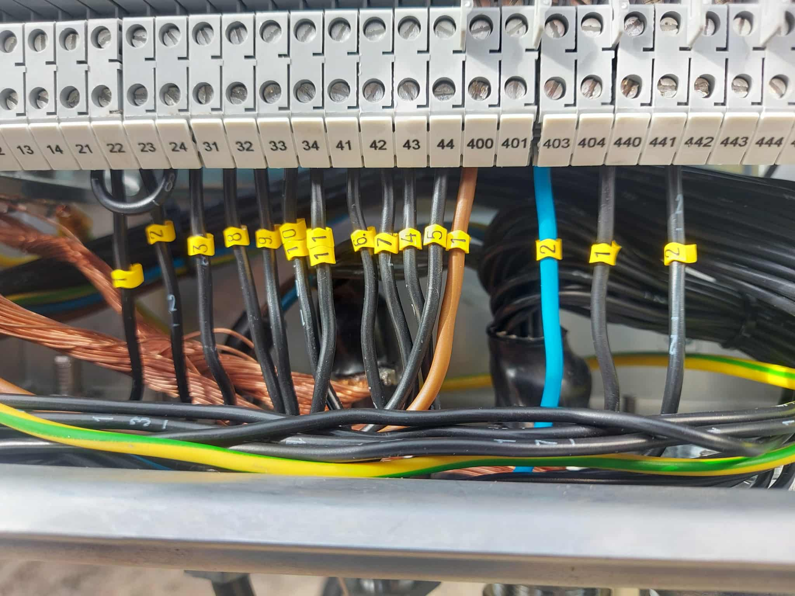
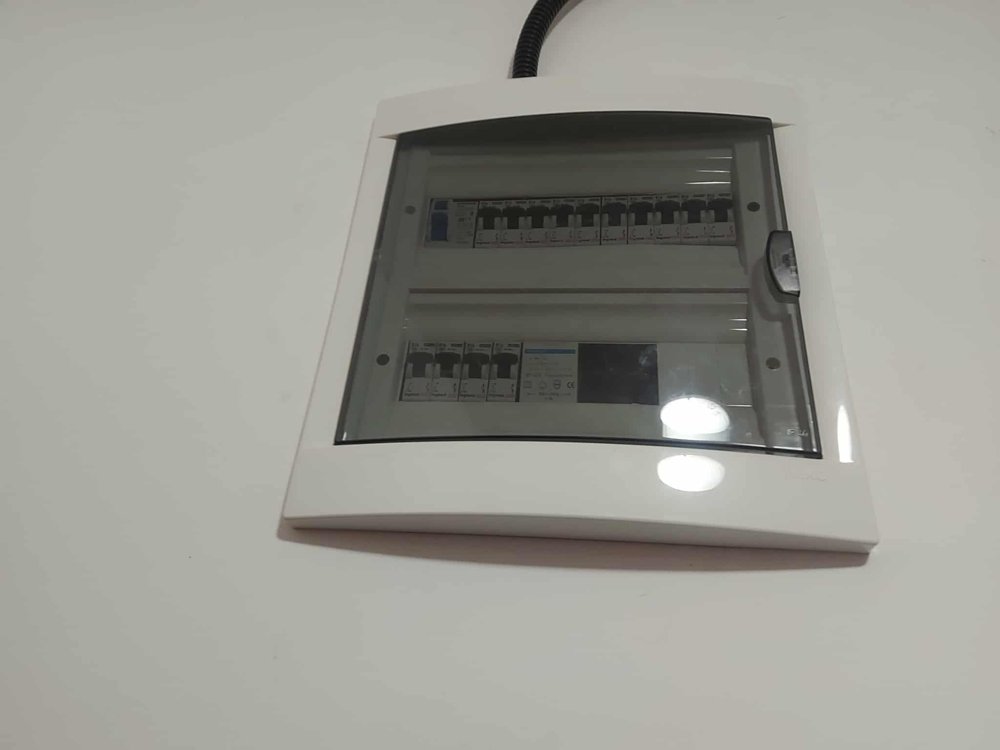
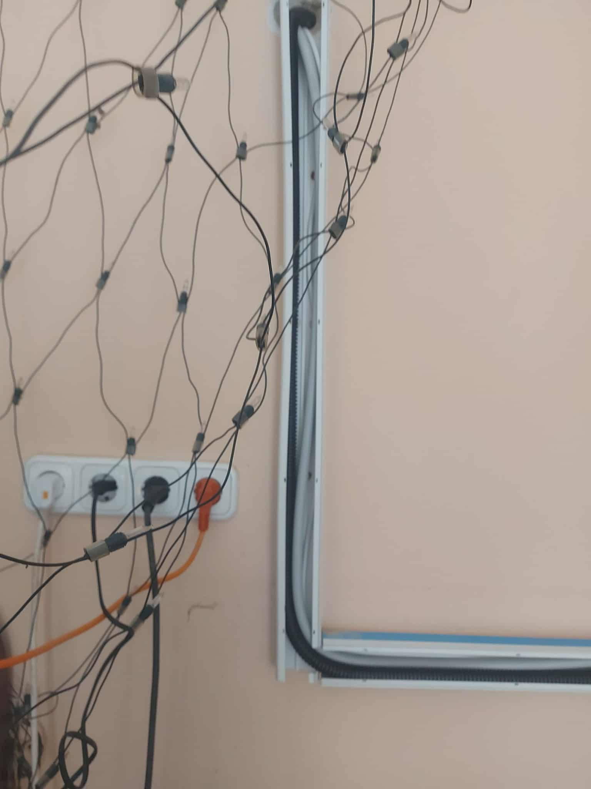
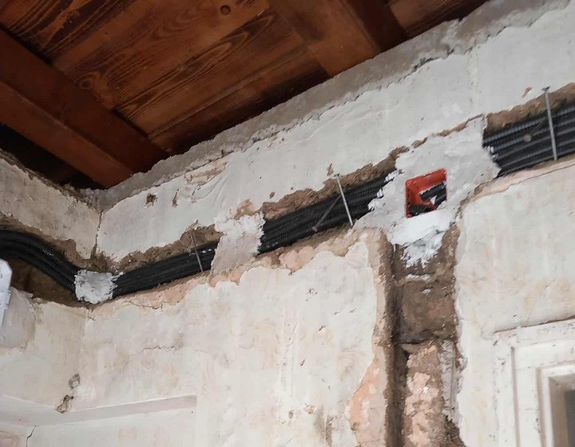

Villanyszerelő szakmunkást keresünk!
Jelentkezés e-mailben vagy telefonon önéletrajzzal és bizonyítvánnyal.
Bársony Boglárka Johanna
Okleveles fizika tanár és villanyszerelő, több mint 5 év tapasztalattal
Korszerű, biztonságos és megbízható villamos hálózatok tervezése, kivitelezése és karbantartása
Szolgáltatások
Családi házak és panellakások hálózatfelújítása, javítása, karbantartása, új építésű ingatlanok teljes villanyszerelése.
Hálózatkorszerűsítés
Elavult vezetékek és biztosítéktáblák cseréje, bővítése a mai igényekhez.
Hibaelhárítás
Rövidzárlat, zárlat, kismegszakító leoldás okainak gyors feltárása és javítása.
Világítás és szerelvények
Lámpatestek, kapcsolók, konnektorok szakszerű szerelése és cseréje.
Új építés
Teljes körű villanyszerelés új ingatlanokhoz – tervezéstől a kivitelezésig.
Karbantartás
Rendszeres ellenőrzés és megelőző karbantartás a biztonságért.
Energiahatékonyság
Környezettudatos megoldások és korszerű eszközök alkalmazása.
Rólam
Bársony Boglárka Johanna vagyok, okleveles fizika tanár és villanyszerelő, több mint 5 éves szakmai tapasztalattal.
Új vállalkozásomat azért indítottam, hogy ügyfeleimnek korszerű, biztonságos és megbízható villamos hálózatot biztosítsak. Munkáimra a precizitás, környezettudatosság, pontosság és garancia jellemző – mindezt megfizethető áron.
Célom, hogy ügyfeleim nyugodtan rám bízzák otthonuk biztonságát, hiszen a megbízhatóság számomra alapérték.
Galéria
Néhány munkám a gyakorlatban.




Kérdésed van vagy ajánlatot szeretnél?
Lépj velem kapcsolatba az alábbi elérhetőségek egyikén!